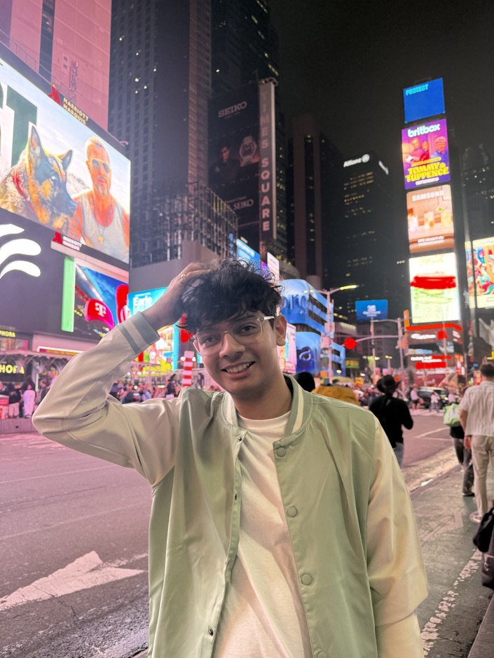

Siddhant Bharadwaj
I am an MS in Artificial Intelligence student at Columbia University, where I study vision-language models for art under Prof. Kathleen McKeown. More broadly, I focus on: 1) VLM evaluation, finding where these models fail, from spatial reasoning and geolocalization to whether they look at the image at all, and 2) post-training strategies that close those gaps.
Previously
- Pre-doctoral researcher at IISc Bangalore, working on AI for oral cancer screening with Prof. Rajesh Sundaresan (our tool, Aarogya Aarohan, won Best Exhibit at India Mobile Congress 2025), and on MLLM-based quality assessment of AI-generated images with Prof. Rajiv Soundararajan, in collaboration with Flipkart.
- Collaborated with Prof. Min Xu (CMU) on Cryo-ET and Prof. Shruti Vyas (UCF) on geolocalization.
- Undergrad in Electrical and Electronics with a minor in Data Science at MIT Manipal, 2024.
Outside research
When I am not programming or doing mathematics, you will find me reading, watching sitcoms, scribbling in my journal, and more often than not posting hot takes on X (formerly known as Twitter).
If you would like to collaborate or talk about one of my projects, feel free to drop a mail.

News
- Oct 2026Cryo-ET few-shot classification paper accepted at two ACCV 2026 workshops: TrustFMI and MM4SciReal.
- Sep 2026Medmarks accepted at the NeurIPS 2026 Evaluations and Datasets Track.
- Sep 2026Started my MS in Artificial Intelligence at Columbia University.
- Aug 2026Oral cancer screening paper accepted at ACM AIMLSystems 2026.
- Jul 2026InfUI accepted at IEEE TENCON 2026.
- May 2026Presented our research to the Temasek Polytechnic delegation from Singapore at TANUH, IISc.
- Mar 2026VLM geolocalization paper accepted at the EarthVision Workshop, CVPR 2026.
- Mar 2026Spatial reasoning paper accepted at the ICLR 2026 ICBINB Workshop.
- Oct 2025Aarogya Aarohan won Best Education Institute Exhibit of the Year at India Mobile Congress 2025.
Publications
Papers on VLM evaluation, post-training, and medical AI.
An open suite of 30 medical benchmarks, used to evaluate 61 LLMs across 71 configurations.
A trainable transformation that narrows the gap between simulated and real subtomograms at both the input and feature level, beating transfer-learning baselines in few-shot settings.
Edge-optimised hybrid models beat large models and distillation for smartphone screening; the best MobileViTv2 reaches 87.4% sensitivity and 86.5% specificity against specialist labels.
Swapping in blank, shuffled, missing, or hard-negative images tests whether medical VLMs really use the image; our CORAL fine-tune of Qwen2.5-VL-7B gains 6.7 points in accuracy and cuts hallucination by 8.0 points.
A zero-shot study of state-of-the-art VLMs predicting an image's country from ground-view imagery alone, across three geographically diverse datasets: results vary widely between models, and fine-grained geographic cues remain a weak spot.
A controlled LLaVA study linking weak 2D spatial reasoning to CLIP-style encoders and 1D token flattening, not just to training data.
Alternative encoder objectives and 2D positional encodings improve spatial reasoning across several benchmarks.
A linear-time Mamba model for document binarisation, with Difference-of-Gaussians features in the skip connections.
* Equal contribution
Talks
Invited talks, presentations, and demonstrations, primarily on AI for oral cancer screening and medical imaging.
|
TANUH (AI Centre of Excellence in Healthcare), Indian Institute of Science, Bangalore Invited Presentation, May 2026 |
|
IISc Open Day, Indian Institute of Science, Bangalore Public Demonstration, 2025 and 2026 [Event] |
|
Egyptian Youth Delegation Visit, Council Chamber, Indian Institute of Science, Bangalore Invited Presentation, November 2025 |
|
National Conference of the Foundation for Head and Neck Oncology (FHNO 2025), Hilton Bengaluru, Embassy Manyata Business Park Demonstration, November 2025 [Event] |
|
World Head and Neck Cancer Day Event, Oral Cancer Task Force Annual Meeting 2025, Golden Jubilee Hall, Indian Institute of Science, Bangalore Invited Speaker, July 2025 [Event] |
|
Symposium on Digital-Twin in Oral Cancer, Mazumdar Shaw Medical Center, Narayana Health, Bangalore Invited Talk, November 2024 |
Achievements
| Breakthrough Concept Award - Google Cloud Agentic AI Hackathon (Prize: INR 50,000) |
| Second Prize - Accel x Anthropic Developers Day |
| Department Rank 1 - Final year of undergraduate program |
| Achiever Scholarship - MIT Manipal (INR 86,000 merit-based award for top 5% in department) |
Writing
Occasional notes explaining ideas in deep learning and NLP from the ground up.
| Breaking Down Text: How BPE Tokenization Works |
| Self-Attention Explained with Code |